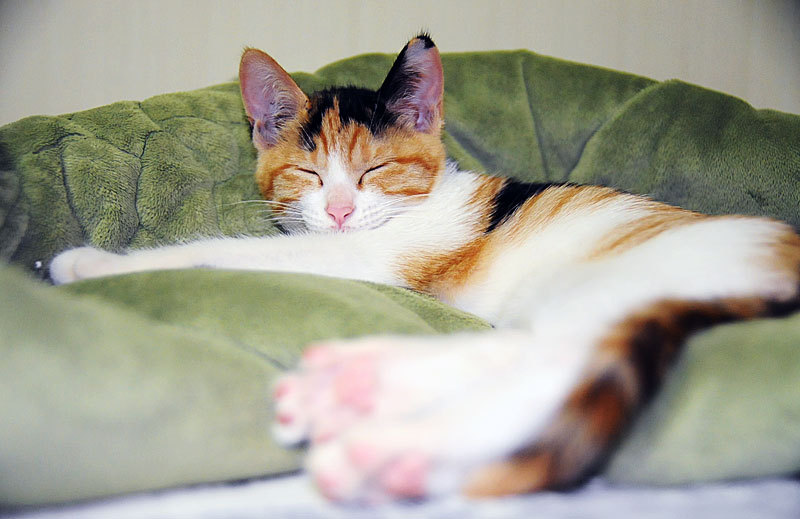

5 Reasons why cats are better

When I was very young, I had both dogs and cats at home. Then, after becoming independent and living alone, I wanted to raise a pet, so I raised a cat because there was a chance to get a cat, and I thought that it was much easier for me to raise a cat than a dog. Of course, it depends on the dog or cat, but based on my experiences so far, the five reasons why I love cats better than dogs are as follows.
1. Cats are much cleaner

I think everyone agrees that cats are cleaner than dogs. First of all, even in bowel movements, cats handle everything on the sand, so they smell less, and they clean up well on their own without additional training. If a cat urinates on the floor other than sand, it smells worse, but it rarely happens. On the other hand, dogs need to train for bowel movements separately, and put newspapers on one side of the house or bathroom to let them defecate on top of it. However, newspapers can't absorb urine, so it smells a lot, and sometimes dogs step on their stool.
2. Cats are quiet

Not all dogs do, but most dogs bark quite loudly and frequently. It doesn't matter much during the day, but if a dog barks loudly in the evening when he is away from home, something difficult will happen with his neighbor. On the other hand, cats rarely cry compared to dogs, and the sound is relatively quiet.
3. Cats are dreamers
Cats spend more than half of their days sleeping. It is said that they usually sleep about 18 hours. Most pets raised by people living alone stay home alone during the day after their owners go to work, but cats sleep a lot, so they have a lot of time to sleep alone, making them relatively less lonely. On the other hand, dogs sleep less than cats, so they often bark under stress or separation anxiety when they are alone.
4. Cats do not bother

Dogs rely on people and have a lot of physical affection, but cats don't. Cats are either playing alone or sleeping. I can focus on my work when I have to go on the Internet or handle the rest of the company's work. Instead, it doesn't come well even if I call it, and sometimes the cat scratches my hand with its fingernails. It hurts a lot. However, I prefer a cat that allows me to rest at home after work rather than a dog that comes back from work and sticks to each other without a break.
5. Comfortable when eating.
Cats don't care much whether their owners eat or watch TV. Sometimes, when a cat is bored, it passes by its owner. When I eat, my dog is always under the table or looks at the food on the table. If the dog looks at it pitifully, I can't help but give it to him, and if I give it to him, he will continue to do so. Anyway, I felt sorry for the dog every time I ate, but I don't feel sorry because the cat doesn't care much.
5 Reasons why dogs are better
She is so adorable. With her eyes still close, button nose, and tiny ears, puppies share many characteristics of a human baby. I'm so inlove with her appearance. Her cute tiny little paws and very smooth hair. And when she is yawning, my heart melts so good.
1. Dogs are loyal companion
If you're looking for a companion that will sit by your side, then a dog might be your best bet. Cats can be quite affectionate and attentive, but only up to a point. They tend to become bored or overstimulated much more easily than dogs, and at that point they want to escape for a while.
His name is Ninja. He is a two-year-old poodle. I am madly in love with him! He is not like the other aggressive and bossy male dog. He is very affectionate. He is always looking for someone to cuddle with. One of the reasons why dogs make good pets is because they help with loneliness. There are times in life where we aren't surrounded by lots of friends and family members. During these times, having a dog as a companion can be very comforting. Dogs love being around their owners and love to please them. There was a time when I was crying, and he never left me until I was okay. I miss him terribly.
2. Dogs are good family pet
Growing up with a dog has been proven to help kids learn social skills, impulse control, and even improve their self esteem. Dogs are always happy to see you when you get home, and their love is unconditional. They're the ideal confidant and an ever-willing playmate. There's no better friend for a child than a dog.
Her name is Clooie She is a four-year-old half-shitzu/half-dachshund mix. She is my first pet and the most dominant member of the family. She is small, but she is our housekeeper. She barks whenever someone passes by our gate, signalling us to be alert and ready. From the bottom of my heart, I adore her.
3. Dogs are affectionate and gentle
If your dog puts his paw on you, it can be their way of saying “I love you”. Just like humans, dogs use snuggling to grow closer to others, so if your pet wants to cuddle they are probably feeling the love. There are studies that dogs are more affectionate than cat which may not come as too much of a surprise considering that cats are known for being the more aloof species. Cuddling, and showing affection in general, is one way in which our dogs strengthen their bond with us. Researchers have even found that bonding with their owners is more important to dogs than it is to other pets (sorry cat lovers).
Her name is Ramen. Clooie and she are siblings. Ramen, in contrast to Clooie, is extremely submissive. This is how she expresses her love for her family.
4. Dogs are smart and intelligent
Dogs are indeed pretty smart. Man's best friend can understand up to like 200 words, interpret our emotions, and even pull off crafty tricks when trying to score a snack. Their memory works differently than us, but they are still able to remember people and other dogs over time as a result of strong associations.
His name is Spinach. He is a two-year-old half-shitzu/half-poodle mix. He always feeds him with his puffy eyes. And I absolutely adore it. He does not eat aggressively, but when he is hungry, he always follows me, signalling that he needs food or water. He also knows where he should poop. He is always welcome to use our restroom. Even though he can not clean it, it is still fortunate for us that he has such a behaviour.
5. Dogs are selfless

This is how we connect. I really enjoy spending time with them. I always make time to interact with them. I did not think it was not worthwhile because it truly makes my heart happy.
I will be eternally grateful for the opportunity to be a furmom. And I will make certain that they receive the care they require.